In April I started working on my master's thesis, which consists of optimizing GPU inference for a graph transformer used for protein docking. There are libraries such as DGL which extend frameworks such as PyTorch to support graph operations (even though we will see that PyTorch already supports the operations we need!). However, they make the model not compilable/exportable, restricting inference to running the PyTorch model in eager mode as a Python server, which is bad performance-wise, to say the least. Therefore, we need to strip out those libraries and handle the graph part ourselves if we want to actually deploy these models efficiently.
Why do we need graphs?
There are fields in which data is naturally represented as a connected network, and this is usually where GNNs succeed. One in particular is bioinformatics, where molecules are naturally
represented as graphs at various levels (atoms, residues, etc.), which means that GNNs with an inductive bias to "think in graphs" simply work better. What I've been
focusing on in particular is the protein-ligand docking problem: given a target protein with a binding pocket and a ligand, how well does the ligand bind to the pocket, and in which pose? This is
especially relevant for drug discovery, where the protein is usually the biological target we are trying to affect, and we are trying to design a ligand which binds well to its pocket (I'm not a biologist, so sorry for any inaccuracies).
One of the SOTA protein docking models is RTMScore, which I'm working on optimizing.
It uses 2 parallel graph transformers (one for the pocket and one for the ligand), which dominate the inference latency. Graph transformers are variants of transformers designed
to work on graphs. There are a lot of different versions of them, but they usually revolve around the idea of limiting attention to the neighbors of a node, potentially also using edge features
to influence the attention score.

While graph transformers are not the only type of GNN, many GNNs perform operations with similar characteristics: operations are done along the edges between neighboring nodes. Therefore, having a good graph representation which lets the GPU efficiently work on node neighborhoods in parallel is a must.
Graphs as sparse matrices
The naïve graph representation would be to represent the graph as a set of nodes, each containing its feature vector and the set of incoming and outgoing edges. Then, for the various ops,
we could assign a thread block to each node (or to multiple nodes) and let it do its thing. This, however, would make the GPU work on small structs and vectors scattered around in memory, leading to horrible
memory utilization.
What we could do instead is represent the graph as its adjacency matrix, where each nonzero entry in the matrix represents an edge and:
- the row index is the source node
- the column index is the destination node
However, most of this matrix would be made of 0s, which is why we store it in a sparse format. This means that if we have a graph with \(N_n\) nodes and \(N_e\) edges with, respectively, \(H_n\) and \(H_e\) hidden vector sizes, we will have a node matrix of shape \(N_n \times H_n\) and an edge matrix of shape \(N_e \times H_e\). This layout already makes operations which are done on all nodes/edges and don't depend on the topology (like linear layers and activation functions) work, as these ops would be the same as if we had a sequence of tokens as input. We can then use sparse matrix formats that act as indices over the edges to speed up lookups, in particular:
- COO, which stores two additional vectors of size \(N_e\): the vector of row indices, i.e. source nodes, and the vector of column indices, i.e. destination nodes. This is useful for getting the source and destination nodes for a given edge (or all edges, as we will see).
- CSR, or compressed sparse row, in which edges are grouped by row. Since rows represent source nodes, it is useful for gathering all the outgoing edges and their destination nodes for a given node.
- CSC, or compressed sparse column, in which edges are grouped by column. Since columns represent destination nodes, it is useful for gathering all the incoming edges and their source nodes for a given node.
In our case, CSR and CSC each require 3 vectors. CSR stores row pointers, destination-node indices, and a mapping back to the original edge order; CSC stores column pointers, source-node indices, and the same kind of mapping. This last vector is needed because we keep both representations while storing the edge features only once.
We can already see that we are working only with vectors and matrices, without any structs, pointers, or lists, which means that we can represent a graph with a set of PyTorch tensors. Now we will see how
all of the operations that I described above can be represented by scatters and gathers on the node/edge matrices using the 3 formats that I just mentioned.
Graph ops as scatter/gather operations
Now that we have laid out how to store a graph in memory, how do we actually use it? We already said that operations which are done independently over all nodes/edges are trivial. Let's now look at something more interesting which utilizes the graph topology: graph attention. It is a variant of standard attention where:
- All node features are projected using the \(Q, K, V\) matrices, which is trivial.
- The attention score between two nodes is still \(q \cdot k\), which is then used to scale \(v\) after the softmax, but this is done only among neighboring nodes.
The second step means, in practice, that for each node we are gathering the source-node keys along its incoming edges and multiplying them by the query of the destination node. So, for every edge, we multiply the key of the source node by the query of the destination node. This is done via 2 gather operations: the first gets the keys using the COO row index, and the second gets the queries using the COO column index (remember that the row of an edge is the source node index, and the column is the destination index). In PyTorch it looks something like this:
q = self.Q(nodes)
k = self.K(nodes)
v = self.V(nodes)
qk = q[coo_col_index] * k[coo_row_index] # (N_EDGES, ATTN_DIM)
# we then sum over the last dimension to finish the dot product
scores = qk.sum(-1, True) # (N_EDGES, 1)After doing the various normalization steps, including the softmax over the incoming edges of each destination node, we now have a score for each edge. So how do we multiply it by the correct value vector? For each edge, the value vector is the one associated with the source node, so we again gather by the row index!
v_scaled = v[coo_row_index] * scores # (N_EDGES, ATTN_DIM)Now we need to perform some sort of selective reduction, where for each node we sum the scaled values of the nodes connected to incoming edges. This is a scatter operation: we use an index to tell each vector where to go while accumulating by addition. Because we are reducing by destination nodes, we use the COO column index. In PyTorch it looks something like this:
# we first build a zero tensor which will be used as an accumulator for scatter_add_
# note that scatter_add_ requires the index to have the same shape as the input tensor (v_scaled), which is omitted here
attn_result = torch.zeros(N_NODES, ATTN_DIM).scatter_add_(0, coo_col_index, v_scaled) # (N_NODES, ATTN_DIM)
And that's it! As you can see, we can represent a lot of graph operations efficiently using standard tensors and gather/scatter operations, without the need for external libraries. You may
have noticed that, even though I mentioned 3 different formats before, in practice we only used one: COO. This is because we can technically do everything with just that, and PyTorch, from what
I know, doesn't let us provide a CSR/CSC index to operations such as scatter_add_. However, COO indexing is not always optimal. One particular case is the final scatter add, which we can make about 2x faster
with a custom kernel that exploits the CSC index, something that I will cover in a future article.
Batching graphs
As a final note, I want to add something about batching: how do we batch graphs? Batching is mandatory for high-throughput systems; however, with graphs we cannot simply add a leading batch dimension. You may think that we could actually do that by padding graphs with fake nodes and edges such that they all have the same size, but then we have to be careful during batch construction not to add too much padding and waste computation. What we can actually do, given two graphs \(G_1, G_2\), is put them in a bigger graph \(G\) while keeping them disconnected. This is easily done by concatenating the various tensors along the node/edge dimension and shifting the indices by the number of nodes in the previous graphs. This keeps them disconnected, and the parallelism across the batch is naturally handled by the gather/scatter operations! For graph-level operations, such as pooling, we also need a vector which tells us which graph each node belongs to.
